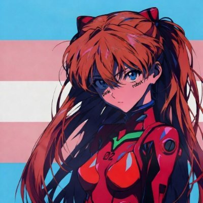

アシェー
@bolckAshley
一個高階層跨女mtf該具備什麼
我這裡給出四點證據
1.首先是軍事獨立
30+的陸軍師團和充足的武備庫
有起碼兩個航母編隊
全球範圍內的軍事打擊能力
2.其次是工業完整
完整的工業體系
自主生產軍工與高科技產品
具備產業鏈自給能力
3.其次是經濟獨立
雄厚的經濟實力
完整的金融與能源體系
能承受長期外部封鎖
4.高效管理
完善的行政體系
強大的資源調動能力
高效的後勤與情報系統

✟艾晚晴✟ 🍥PINK
@JiaRanToday
一个高阶层跨女mtf应该具备什么
我这里给出四点证据
1.首先是经济独立
30+的应急资产/投资账户
没有负债
稳定主业和副业
2. 外形完整度
一套适合自己的衣柜
专属化妆台和多样化的化妆品
发型长期维护管理
有几套穿的出去的完整形象
皮肤